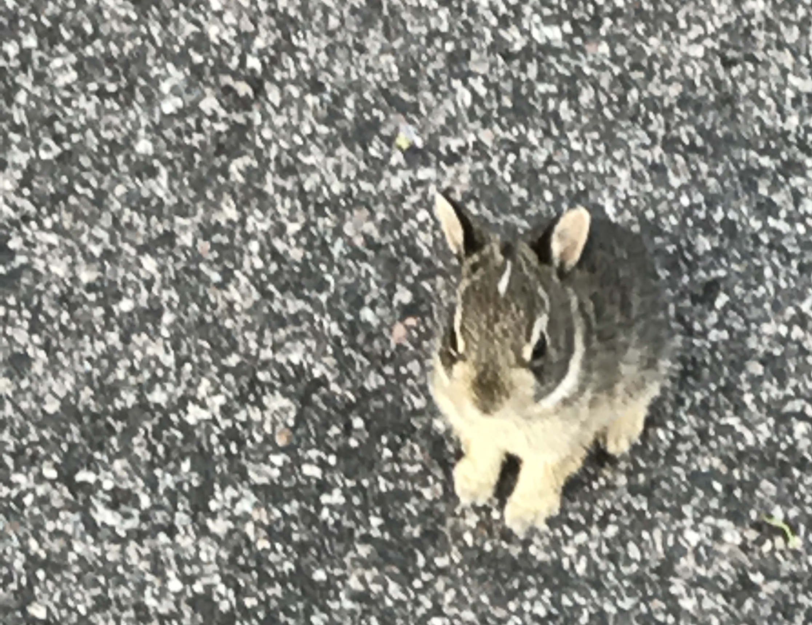
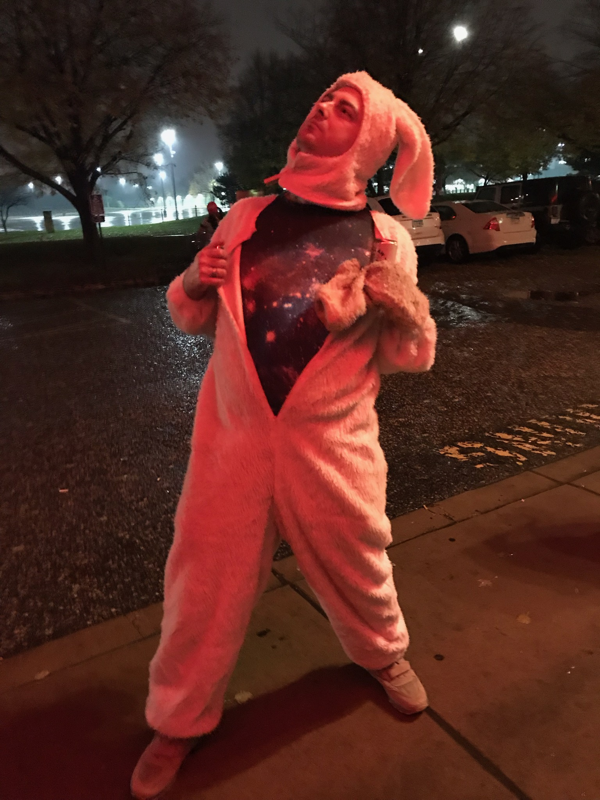

Michael Coyne
-
About Me..............................................
Work....................................................
Contact Me
About
mike wrote this poem: 1. …a dream emerges from the Void… The Light of Love creates new space, Void becomes supernova. A silent light in a deafening space, Being blooms and life unfolds us. The first cell ever to divide, did not know it died. We’re all branches of that seed, the seed forever blooming... Or maybe we’re dreaming! Maybe we’re the dream? 2. A Dream Emerges (part 2) Waiting for the sunrise, waiting in the moonlight. 3. Ries Note (instrumental) 4. I Know I don’t know why, it’s always been on my mind- where’d the time go? I turn around, 10 years under my toes, well I guess that’s just how it goes. Where’d you come from, and where did the time go? All I hold, slips right through my fingers, think it’s time for me to let go. What’s your goal? Maybe meta-transcendence? You know that’s just how I roll. Where’d you come from, and where did the time go? Say no more, you’ve already heard it, I know. 5. Posture Make my vision clear and my posture right. Keep my breath deep and my heart alight. Keep our lives living in the Sunshine; closed eyes and an open mind. The sky knows, what the aura knows. The sky, the sky knows, like the aura knows. It’s not grasping and it’s not rejecting, nor rejecting grasping. Welcome to the all-accepting, isn’t that just what you wanted? Yeah..! The sky knows, that the aura knows. The sky, the sky knows like the aura. 6. Retroactive Meaning it seems for all we know, it’s still a mystery. I know She hears our prayer, She sends her healing. So I close my eyes, and I try to speak, then I realize, I’m ready to believe. They say that the ocean floor is not the deepest. They say that the wise road- it’s not the steepest. So I close my eyes, then I tried to speak. Then I realized, I am ready to believe. Do you know what I mean? Its retroactive meaning. You’ll see what I mean, when it’s complete. 7. Infinite Sunrise Aura Feelings show, then where do they go? Don’t we all know? We all know how... It’s hard to believe, the Truth is beautiful. It’s not something else. And I think you’re right. It’s not something else… and it’s something else, farther out. And it blows my mind, but it’s hard to tell, from the firelight, and Your cosmic spell. You’re farther out. When the time is right, we will know it well, when it’s right on time, like a silent bell. We’re farther out. 8. Bodhiworld we bring the world by, we see with the Earth’s eyes. Then we get a goodbye. Ahhaa! We had a good time, we caught a good vibe, and then we got a goodbye. We see the Earth cry, we see for the first time, then we get a goodbye... ahhhhh! Waiting for the Sunrise, waiting in the Moonlight, I don’t want to say goodbye, we were having a fine time. 9. Untitled why would you ask now? When you’ve always known. Our love only grows, even when it’s cold out. Why would you ask now, “where will this love go?” when our love always grows. The light of our love will never go out. 10. An Equadelic Question Laughing at the time it’s taken, laughing at a fact of life. Little did I know I was faking it, I swear I do it half the time. Do we know just what it’s taken? Are we always asking why? Joy and sadness are the rainbow light, and both feelings make me cry. 11. Like a dream some say life is filled with sorrow, I cannot disagree. Is that the reason we wait until tomorrow, to make our peace? Some say that Eternal bliss is well within our reach. I don’t know, but if I do find it, I’ll sure get you a piece. Some say life is like a dream, and some say it’s not. I’m not too sure what all this means, but I’m listening. As old friends don’t say too much, and what they say, they mean. Something I know I can trust, said to put my mind at ease. As I look back, reflect upon it, and sing it in the breeze, I feel my heart gently smiling, and I don’t know what it means. Some say life is like a dream, and some say it’s not. I’m not too sure, oh, about anything, but I’m listening.
Work
Contact me at the links below!
